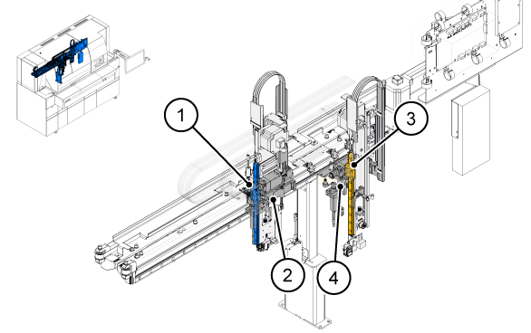
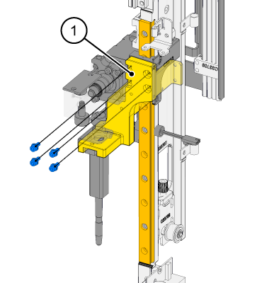
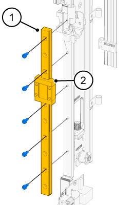

Replacing the Z-axis Carriage and Linear Slide
This topic includes information about how to replace the Z-axis carriage and linear slide for the aliquot and precision sample pipettors.

| 1 |
Aliquot sample pipettor |
| 2 |
Precision sample pipettor |
Safety Reminder
Servicing the DxI 9000 instrument involves potential risks for pinch and puncture, electrical shock, and exposure to hazardous materials. You must mitigate these risks by taking appropriate countermeasures. See Safety for more information.
| Table of Contents |
|---|
| Recommended Tools |
| Removing the Z-axis Carriage and Linear Slide |
| Installing the Z-axis Carriage and Linear Slide |
| Alignments |
| Verification |
Recommended Tools
- 1.5mm hex driver (for M2 screws)
- 2.5mm hex driver (for M3 screws)
- 3mm hex driver (for M4 screws)
Removing the Z-axis Carriage and Linear Slide
Perform this procedure to remove the z-axis carriage and linear slide.

| 1 | Z-axis carriage and linear slide |
| 2 | Precision sample pipettor |
| 3 | Z-axis carriage and linear slide |
| 4 | Aliquot sample pipettor |
- Disconnect and remove the following cables and tubing from the carriage:
- Syringe motor
- Pressure sensor printed circuit board (PCB)
- White and black cable
- Home sensor
- Remove the four screws (2.5mm driver) that secure the z-axis carriage to the z-axis linear rail truck, and remove the z-axis carriage.

1 Z-axis carriage - Remove the five screws (2.5mm driver) that secure the z-axis linear rail to the gantry, and remove the z-axis linear rail.
Caution: Be sure the linear rail truck does not slide off the end of the linear rail.

1 Z-axis linear rail 2 Linear rail truck
Installing the Z-axis Carriage and Linear Slide
Perform this procedure to install the z-axis carriage and linear slide.
- Install the z-axis linear rail and secure with five screws (2.5mm driver).
Caution: Be sure the linear rail truck does not slide off the end of the linear rail.
1 Z-axis linear rail 2 Linear rail truck - Install the z-axis carriage onto the z-axis linear rail truck and secure with four screws (2.5mm driver).
Note: To ensure the perpendicularity of the mandrel at pipetting positions, when you tighten the screws, be sure to adjust the machined reference surface of the z-axis carriage to the z-axis linear rail truck.
1 Z-axis carriage - Install and connect the following cables and tubing onto the carriage:
- Syringe motor
- Pressure sensor PCB
- White and black cable
- Home sensor
Alignments
Perform alignments. See the following topics for more information.
Verification
Complete the verification of service repair. See Verification of Service Repairs for more information.